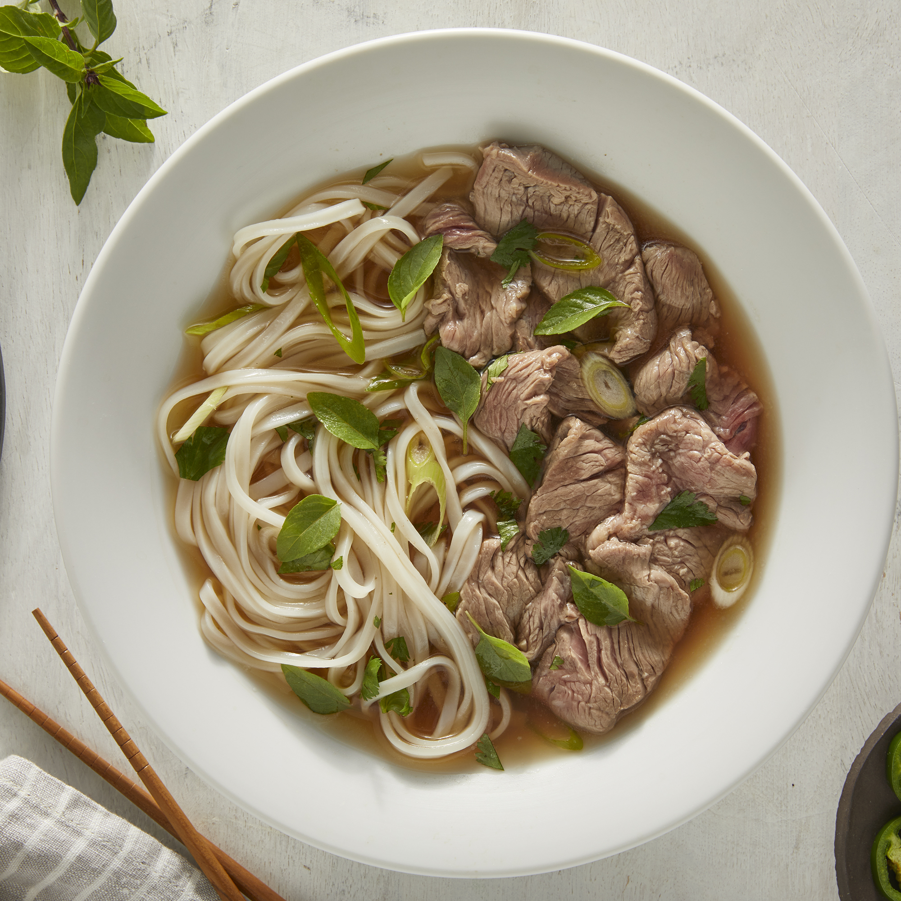

Authentic Pho

What is Pho?
Pho is a soup consisting of bone broth, rice
noodles, thinly-sliced meat (in this
recipe, it's beef), and fresh garnishes.
Where is Pho from?
As with many foods, the origins of pho are unknown.
It is believed to have been created in northern Vietnam
in the early 20th century. It gained popularity
in many countries after the Vietnam War.
Ingredients
Here's what you'll need:
-
Beef Soup Bones
Use the shank and knee to make the homemade bone broth.
-
Rice Noodles
You should be able to find dry rice noodles at most
grocery stores, either in the international
aisle or another pantry aisle.
-
Beef
This recipe calls for beef top sirloin.
Make sure it's thinly sliced so the hot broth can cook it.
-
Fish Sauce
Fish sauce will give the pho a hint of salty, fishy flavor.
-
Onion
Roast the onions for an extra depth of flavor.
-
Spices and Seasonings
This recipe calls for ginger, star anise, and salt.
-
Garnishes
Garnish your pho with cilantro, green onion, Thai basil,
lime, hoisin sauce, sriracha, or anything else you like.
Steps
How to Make Pho
-
Roast Bones and Onion
Roast the beef bones and onions until the bones are browned and the onions are soft.
-
Make the Broth
Combine roasted beef bones, roasted onions, ginger, salt, star anise, fish sauce, and water in a large stockpot. Allow to simmer for 6 to 10 hours. Then, strain the broth into a new saucepan.
-
Soak the Rice Noodles
Allow dry rice noodles to soak for 1 hour. While they're soaking, bring broth to a simmer.
-
Cook the Rice Noodles
Cook the rice noodles in boiling water. Drain and add noodles to a bowl topped with sirloin, cilantro, green onion, and broth. Garnish with your desired toppings.